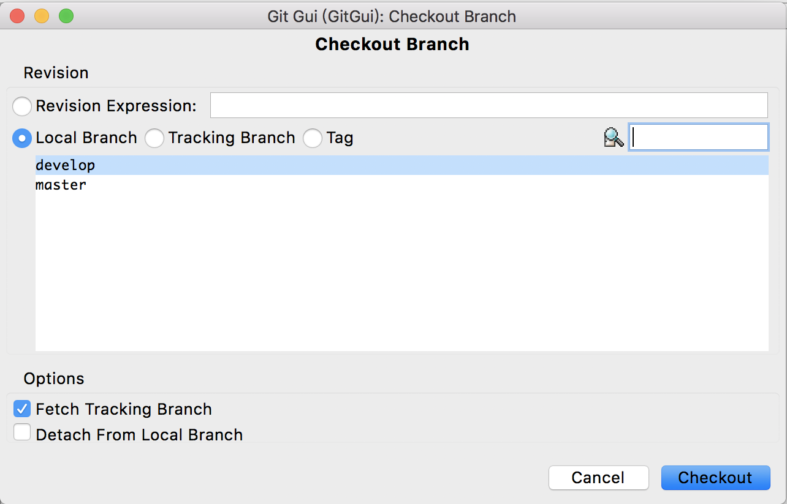

git 簡介 GUI 版
這篇文章基本上就只是將之前寫的『 git 簡介 』把所有指令的部分改成相對應的 gui 操作，剩下基本上都是照抄(懶得重寫)。 昨天興致一來想到 git 本身自帶簡易版的 gui，所以就自己試了一下如何用這內建的 gui 做簡單的操作。 因為自己本身不用 git 的 gui，只是想說還是有人習慣用 gui，所以就還是介紹一下 gui 上的操作。
git 與版本控制
git 是由 Linux 的開發者 Linus 所做的一個版本控制系統。 任何被修改過的檔案都可以被視為不同的版本，而版本控制顧名思義就是協助使用者管理不同版本的軟體。 在程式開發上常常需要做這些版本的管理，因為修改程式很容易發生原本可以正常運作，改完卻死掉的狀態。 如果有保存之前的版本，就可以比較差異，甚至是直接回復到過去的版本。 傳統上可以用資料夾或壓縮檔分別儲存不同的版本，但是人工維護多個版本很容易就會發生搞錯或是讓整個版本資訊變得很亂的狀況。 因此為懶而懶的程式設計師就開發了用來取代人工的版本控制系統。 當然，版本控制系統並不受限於程式原始碼，只要是檔案都可以透過版本控制系統做管理，像這份文件就透過 git 做管理。
版本控制系統又簡單分成集中式與分散式，其中 git 是屬於分散式的版本控制系統。 這兩種版本控制系統主要的差異在於版本儲存的方式。 集中式的系統只將版本儲存於伺服端，而要使用到的人都只能透過這唯一的伺服端做操作。 分散式的系統則是所有使用這些版本的使用者都會有一份完整的版本資料。 這使得其中一端的資料毀損時可以透過任何擁有版本資料的人復原，同時不必因為受限於網路無法存取伺服端而讓開發停滯。
目前我個人使用 git 一年半左右的經驗是覺得使用 git 有以下好處
備份資料
這樣開發程式如果要大改時就可以毫無忌憚的亂改，反正掛掉時可以隨時回復。
多人開發
因為 git 可以將不同的版本很容易的做合併，在多人開發時就不必擔心檔案不同步的問題。
檔案傳輸
這是我個人偏好，因為我常在不同電腦與系統間轉換，而使用 git 就可以很簡單的透過第三方伺服端傳輸檔案。
上面幾個好處並不只限於 git，而且是從我的角度出發，實際還是以每個人各自己體驗做考量。 接下來會開始介紹 git 的基本使用，這篇主要是為使用 gui 的人考量，所以會用 gui 做介紹。 喜歡用指令介面的人可以參考 git 簡介 這篇文章。 本文採用的 gui 介面為 mac 上 git 版本 2.17.1 的內建 gui，理論上在各平台應該都長得差不多。 在安裝完官方的 git 後，應該可以找到 git gui 的 icon，如果找不到請直接在指令介面輸入 git gui & 開啟。 如果想要使用更美觀的 gui 介面，還請自行上網搜尋。
初心者
先放個 gui 剛開啟的介面(不知道為啥我的介面是英文的，也許本身就是這樣，懶得找原因了)
首先，在第一次使用 git 時要先做一些設定。因為 git 強制要求每次儲存一個版本時要附上修改者的名字與電子郵件。 不過不知道為啥，我使用 git gui 時必須建立倉庫才能做設定，所以首先我們先建立 git 的倉庫。 點一下 create new repository 後會詢問要創建 git 倉庫的位置。

選好要讓 git 做版本控制的資料夾後，按下 create。 這樣就會建立好 git 做版本控制所需要的資料。
在資料夾底下會出現名為 .git 的資料夾，我們稱這個資料夾為一個倉庫( repository )，我自己是簡稱 repo。 裡面存放的就是 git 對各個版本的紀錄以及一些其他的相關資料。 而這個倉庫所在的資料夾被稱為工作資料夾( working directory )。
接著就可以來做設定了，打開 preference 來做設定。
上面是我自己的設定，給大家當參考用。使用時將 flotisable, s09930698@gmail.com 分別改成自己的名字跟電子郵件即可。 需要說明的是 git 將設定檔分為三個層級，不過 gui 好像只能設定兩個層級
- 使用者設定檔: 右半邊設定
- 倉庫設定檔: 左半邊設定
越下面層的設定會蓋掉上一層的設定，可以視個人喜好做調整。
接著我們要來試著做一次提交( commit )。 當我們對工作資料夾裡的檔案做修改或是新增檔案後，可以按下視窗下面的 rescan 來看看現在這個資料夾的狀態。
假設我們新增一個名為 test.txt 的檔案，如果現在按下 rescan，可以看到它還沒被追綜。
我們要先將它做暫存( stage )，請按下 stage changed，它會詢問是否要暫存，選 yes。
就可以發現 test.txt 跑到 staged changes 了。確認 ok 後，就可以提交這次的版本。 在視窗下面的 commit message 輸入提交訊息後，可以按下 commit 做提交。
做完提交之後我們可以利用 repository 的 visualize master's history 來觀看過去的提交訊息。
它會開啟專門用來看歷史紀錄的 gui 程式 gitk。
這樣我們就會了 git 的基本使用
另外提個幾點，除了 create new repository 可以建立新的倉庫外，也可以用 clone existing repository 來複製已存在的倉庫。
比如說要複製 git 的官方倉庫，source location 可以輸入 https://github.com/git/git.git。 至於 target directory 就是想將這個倉庫放在哪個本地端的資料夾，必須是不存在的資料夾。
另外就是 git 與其他版本控制系統比較不同的一點( 在我有限的知識內 )，git 對於一次的提交分成了兩階段。 第一階段為 stage，第二階段才是 commit。 這讓版本的儲存又多了一層，我們可以修改後再決定要提交哪些檔案，而不是所有修改檔案都要提交。 而且可以用 stage 作暫存，不用到 commit 才會真正儲存。從 stage 復原比從 commit 復原相對較為方便。 接下來要講一點 git 好用的功能: branch
升級
git 有一個方便開發的功能叫做分支，分支的特性讓我們可以針對不同需求讓版本的更迭不是線性的一條線。 我先講講分支怎麼使用，再簡單介紹一兩個使用的方式。 在還沒建立新的分支前，我們可以先看看 git gui 左上角
我們可以看到在預設的情況下我們是在 master 的分支。 那麼我們來建立新的分支，使用 branch 的 create
來建一個名為 develop 的分支
這樣我們就建立了一個名為 develop 的分支。預設創建完會直接跳到那個分支，左下角可以做設定。 如果不想跳到那個分支，可以將 checkout after creation 的選項取消。 我們可以從 branch 的 checkout 來看現在這個倉庫所擁有的分支。

同時也可以用這個介面來切換不同分支
我們可以在不同分支做不同的修改與提交，等到覺得時機到了，可以將兩個分支做合併。 假設我們在 master 提交了名為 test.txt 的檔案，而 develop 在 master 之後提交了 temp.txt 的檔案。 也就是說整個版本可以看成這樣
+----------+ +----------+
| test.txt |--->| test.txt |
| | | temp.txt |
+----------+ +----------+
^ ^
master develop
從 gitk 看長這樣
現在我們可以 checkout 到 master 分支，選擇 merge 的 local merge
然後選擇 develop 來合併
這樣就會將 develop 這個分支並到 master 中。現在整個版本可以看成這樣
+----------+ +----------+
| test.txt |--->| test.txt |
| | | temp.txt |
+----------+ +----------+
^
master, develop
從 gitk 看長這樣
這樣我們就會分支的基本使用了，至於可以怎麼用這些分支，以下介紹兩種方式。 當然還有很多使用方式，這就要靠各位自己探索了。
依性質建立分支
比方說，我們希望 master 是穩定沒問題的版本，並利用 develop 作為開發版。 我們可以在 develop 做任意的嘗試，等到覺得夠穩定了在合併到 master 之中。
依功能建立分支
我們可以將 master 作為 base，並在不同分支開發不同功能。 比如 ui 分支開發使用者介面，internet 分支開發連網功能。 等到某項功能開發完就可以合併到 master 中。 這種使用分支的方式比較容易碰到不同分支對同一份檔案做修改的問題，所幸 git 合併的功能還不錯，沒有太大的衝突都可以順利的合併。 真正遇到 git 無法解決的衝突，git 會將決定權交給使用者。 合併後並不會做提交，而是將有衝突的檔案讓使用者做修改，等使用者確定沒問題再依一般方式做 stage 與提交。
有衝突的檔案會在檔案中用下面方式標示衝突點
<<<<<<<<<<<<< HEAD if( a == b ) return; ============= if( a < b ) break; >>>>>>>>>>>>> internet
HEAD 是指要合併到的分支，在這裡是 master，而 internet 就是指 internet 這個分支。
轉職
最後要來介紹如何跟伺服器端做溝通，這在多人開發時很常用到。 基本上用 clone existing repository 的方式建立倉庫，對於伺服器端的設定就被處理好了。 可以從 remote 來查看
如果有設定好伺服器端
如果沒設定好伺服器端
要同步一下伺服器端資料時就選擇 remote 的 fetch from
這時候就可以用 merge local merge 中的 tracking branch 來將伺服器端分支合併到本地端分支
而 remote 的 push 則能將本地端分支合併到伺服器端分支
再來講講如果沒有設定好連結的伺服器端要如何處理。 最簡單是每次 push 都指定伺服器端網址與分支，在 arbitrary location 輸入伺服器位置即可
可是每次這樣太累了，我們可以用 remote 的 add 紀錄伺服器端的位置
上面輸入的資料指令會用 github 紀錄 https://github.com/git/git.git 的位置
可以看到現在可以 fetch github 了